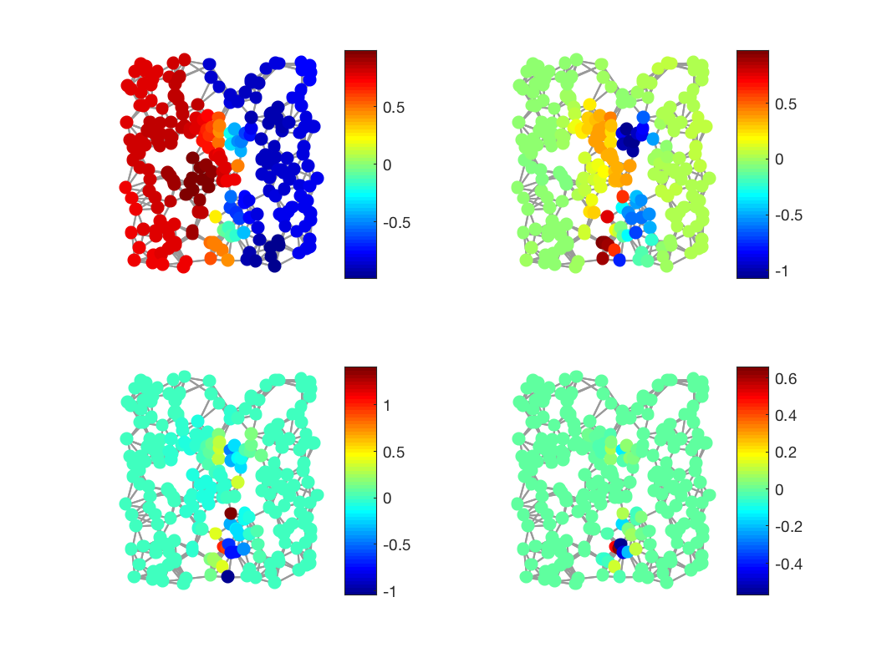

coeffs = gsp_filter_analysis(G, fi, signal); coeffs = gsp_filter_analysis(G, fi, signal, param);
| G | Graph structure. |
| fi | Set of spectral graph filters. |
| s | graph signal to analyze. |
| param | Optional parameter |
| c | Transform coefficients |
'gsp_filter_analysis(G,fi,signal)' computes the transform coefficients of a signal \(f\), where the atoms of the transform dictionary are generalized translations of each graph spectral filter to each vertex on the graph.
where the columns of \(D\) are \(g_{i,m}=T_i g_m\), and \(T_i\) is a generalized translation operator applied to each filter \(\hat{g}_m(\cdot)\).
Each column of c is the response of the signal to one filter.
Example:
Nf = 5; param.distribute = 1; G = gsp_sensor(256); G = gsp_compute_fourier_basis(G); paramf.log = 1; g = gsp_design_warped_translates(G, Nf,paramf); s = sign(G.U(:,2)); sf = gsp_vec2mat(gsp_filter_analysis(G,g,s),Nf); paramplot.show_edges = 1; figure() subplot(221) gsp_plot_signal(G,sf(:,2),paramplot); subplot(222) gsp_plot_signal(G,sf(:,3),paramplot); subplot(223) gsp_plot_signal(G,sf(:,4),paramplot); subplot(224) gsp_plot_signal(G,sf(:,5),paramplot);
This code produces the following output:
GSP_DESIGN_WARPED_TRANSLATES: has to compute the spectrum continuous density function approximation
D. K. Hammond, P. Vandergheynst, and R. Gribonval. Wavelets on graphs via spectral graph theory. Appl. Comput. Harmon. Anal., 30(2):129--150, Mar. 2011.